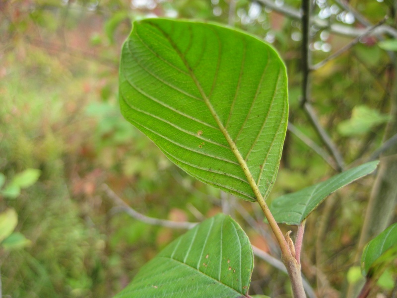
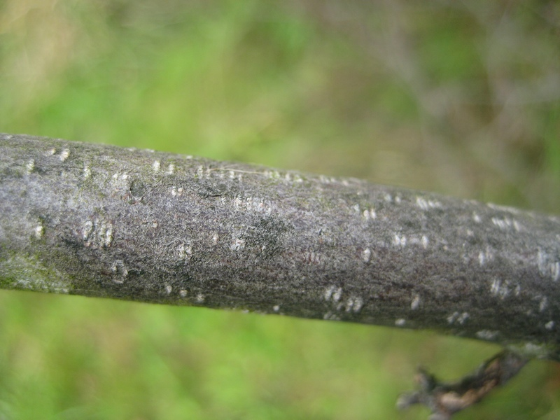
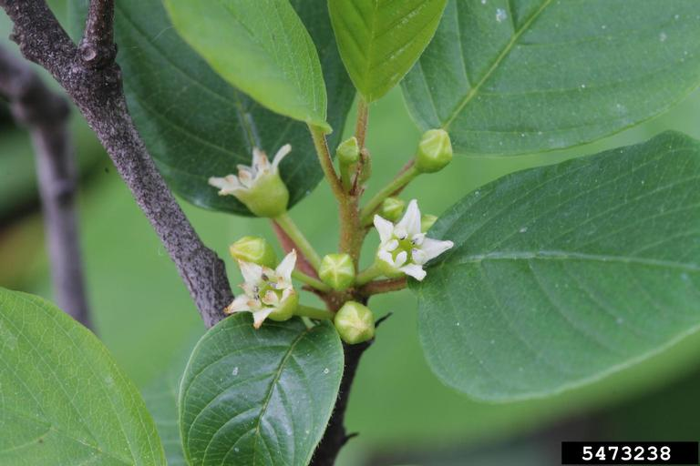

photo: Cleveland Metroparks
Glossy Buckthorn (Frangula alnus)
 Cleveland Metroparks |
Cleveland Metroparks |
Cleveland Metroparks |
Rob Routledge, Sault College, Bugwood.org |
{kind=link}
{kind=link}
{kind=link}
Form:
Shrubs up to 20-25' tall, often with several stems arising from the base, and spreading crowns. Gray to brown bark with prominent light colored lenticels.
Leaves:
Ovate or elliptic, with prominent veins curving toward tip. Stay green late into fall. Entire, mostly alternate leaves, 2-3" long, with glossy upper surface and dull underside that may be hairy.
Flowers:
Small and clustered in leaf axils. Small, pale yellow, 5-petaled flowers that bloom from mid-spring to first frost.
Fruits & Seeds:
Abundant clusters of round, pea-sized fruit. Red to dark purple. Dispersed by birds and mammals.
Similar Species:
Common buckthorn (Rhamnus cathartica) non-native
Alder buckthorn (Rhamnus alnifolia) native
Lance-leafed buckthorn (Rhamnus lanceloata) native
Carolina buckthorn (Rhamnus caroliniana) native
Tier 4 - Widespread and Abundant
These are known problem species throughout Cleveland Metroparks and are currently under active management. Management plans are set using population extent and site-specific information.
Action: These plants should be recored as present or absent. These species are known to be widespread and abundant throughout Cleveland Metroparks.